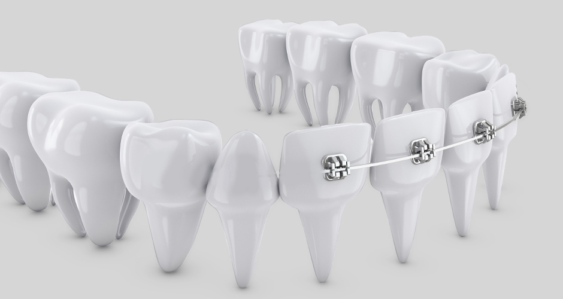
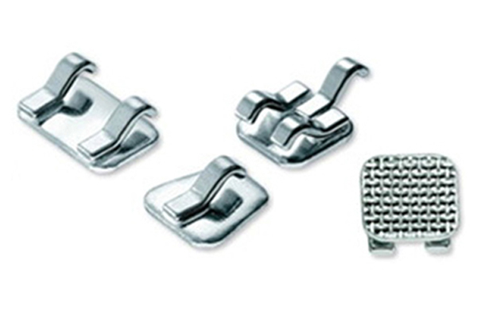
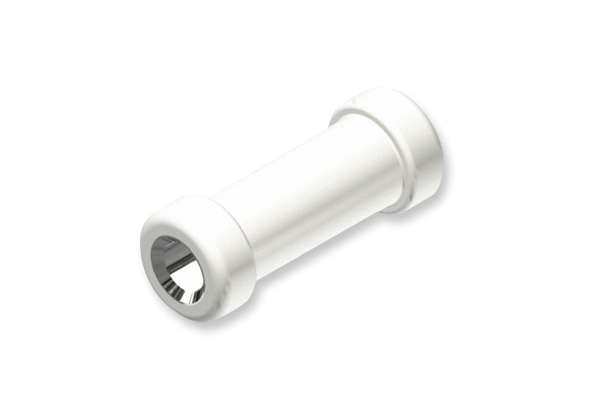
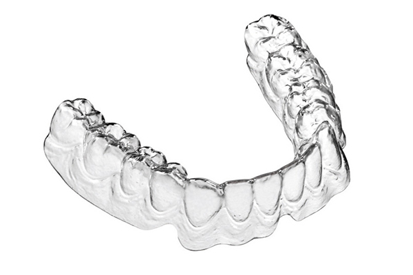
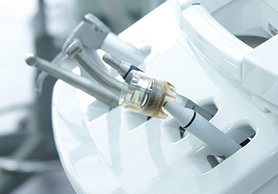
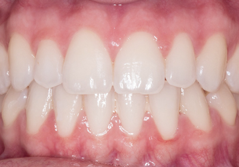
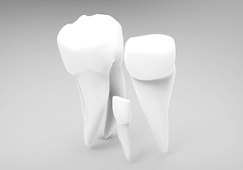
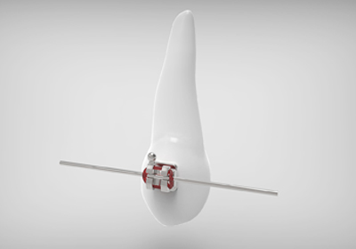
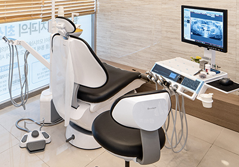

2D 교정
- 2D 브라켓을 이용한 설측 교정
- 앞니 안쪽에 장치를 부착해 겉으로 보이지 않음
- 크기가 작아 이물감 감소
앞니 등 필요한 부위만 가지런하게 다듬는 부분 교정치료입니다.
<%=m_client_en%>
보이지 않아도 강력하다
전체 치아를 대상으로 하지 않고, 교정이 필요한 부분이나 원하는 부분만 골라서
단기간 내에 교정하는 방법입니다.
필요한 부분만 교정하기 때문에 전체 교정보다 저렴할 뿐만 아니라
불필요한 통증이나 교정기간을 줄일 수 있습니다.

심미적으로 중요한 앞니만 부분적으로 교정하는 빠른앞니 교정으로 해결가능합니다.
겉으로 보이지 않는 교정장치로 티 안나게 교정하세요.







